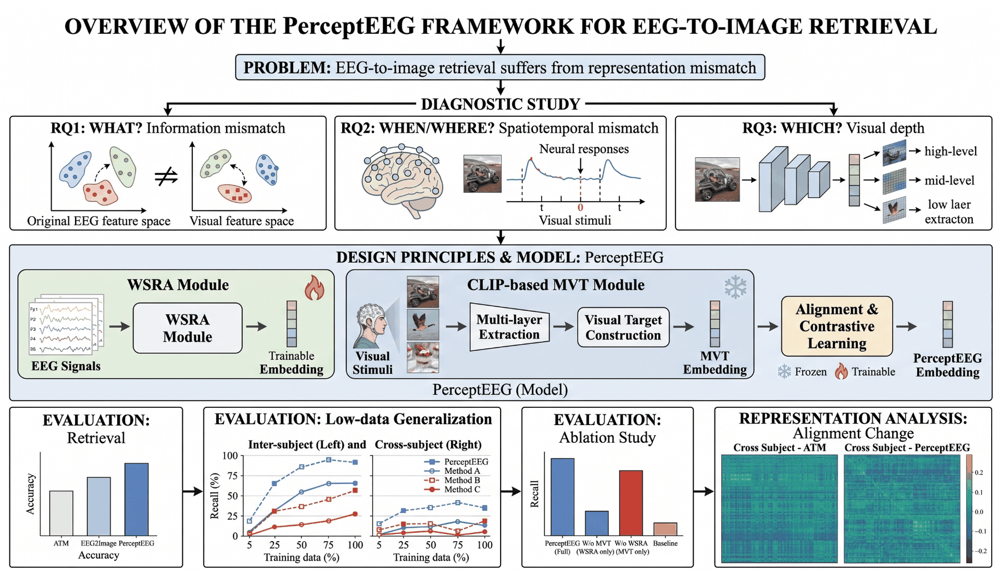
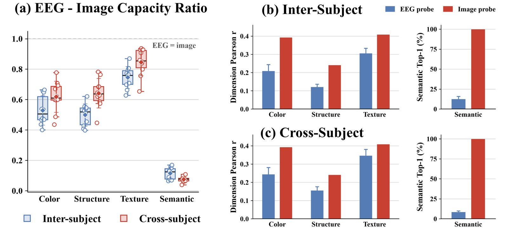
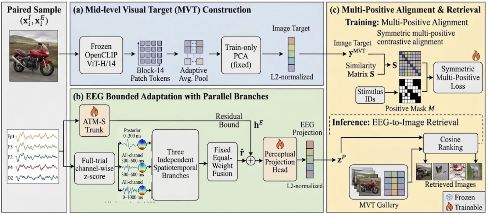
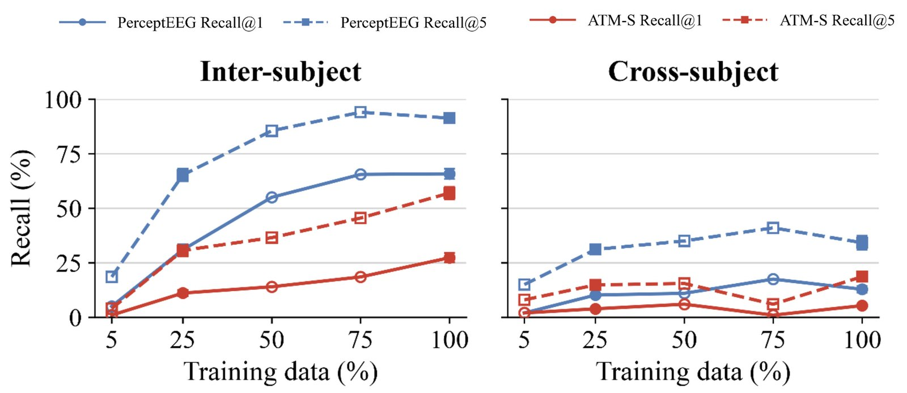
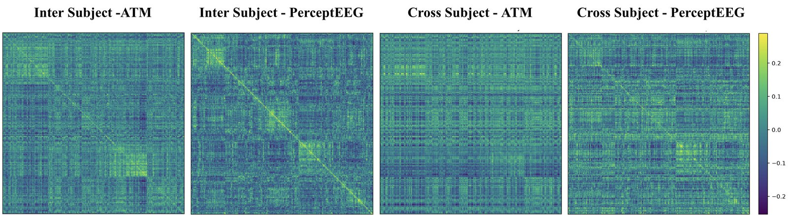
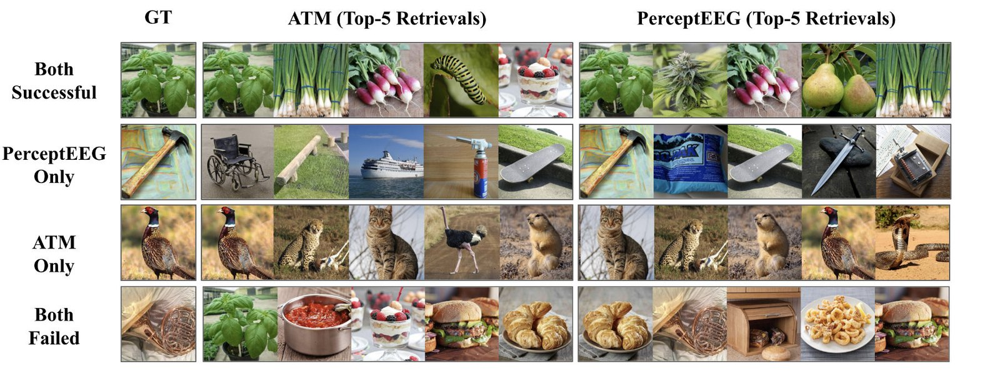

PerceptEEG: Diagnosing and Bridging the EEG–Visual Representation Gap for Zero-Shot EEG-to-Image Retrieval
MSc dissertation, The University of Manchester, 2026
Draft, in preparation for submission
Project video. Open on YouTube
Abstract
EEG-to-image retrieval identifies which image a person was viewing from their brain activity. Most methods align noisy EEG with fixed, semantically rich visual embeddings without first asking whether those targets suit EEG. This work studies that mismatch directly: what visual information EEG can recover, when and where it is supported, and which depth of a CLIP vision model corresponds best. The diagnosis shows a much larger mismatch for semantic than for perceptual information, points to the 100–300 ms window over posterior sensors, and favours an intermediate layer (Block 14) over the final one.
Guided by these findings, PerceptEEG combines a Mid-level Visual Target (MVT), a compact, perceptually compatible image representation, with a Windowed Spatiotemporal Residual Adapter (WSRA) that refines EEG features within a bounded residual. On 200-way zero-shot retrieval on THINGS-EEG2 it reaches 65.85 ± 7.46% intra-subject and 12.85 ± 4.76% cross-subject Recall@1, and stays data-efficient when training concepts are reduced.

From diagnosis to design: three probes characterise the mismatch, their findings shape MVT and WSRA, and the model is evaluated through retrieval and representation analyses.
1. Diagnosing the EEG–visual gap
Before designing a model, three controlled probes on the ATM EEG encoder, across ten participants, ask what a good alignment target for EEG should look like.
- What is recoverable? Relative to the image embedding, EEG recovers colour, structure and texture far better than semantics: cross-subject recoverability ratios are 0.62, 0.64 and 0.85 for the perceptual factors but only 0.075 for semantic category.
- When and where? The 100–300 ms window carries the most recoverable information for every factor, and the 24 posterior channels alone keep 95–98% of the all-channel perceptual scores; frontal and central channels are near chance.
- Which visual depth? Among sampled OpenCLIP ViT-H/14 blocks, the intermediate Block 14 gives the strongest correspondence (Recall@1 0.365 at 100–300 ms, against 0.275, 0.160 and 0.120 for Blocks 6, 22 and 32).

EEG-to-CLIP recoverability for ten subjects. Ratios below 1 mean EEG recovers less than the image itself; semantics falls furthest short.
2. Method

PerceptEEG. (a) MVT builds the image target; (b) WSRA refines the EEG feature; (c) both are aligned with a multi-positive contrastive objective and retrieved by cosine ranking.
- Mid-level Visual Target. Patch tokens from Block 14 of a frozen OpenCLIP ViT-H/14 are pooled to a 2×2 grid, reduced to 256 dimensions with PCA fitted on training images only, and L2-normalised.
- Windowed Spatiotemporal Residual Adapter. Three parallel branches, a posterior 0–300 ms view motivated by the diagnosis and two broader all-channel views (300–600 ms and 0–1000 ms), are fused with fixed equal weights and added to the ATM feature as a bounded residual.
- Alignment. A projection head maps the refined EEG feature into the MVT space, trained with a symmetric multi-positive contrastive loss that treats repeated presentations of the same stimulus as positives.
3. Results
Zero-shot retrieval on THINGS-EEG2
| 200-way retrieval (%) | Intra R@1 | Intra R@5 | Cross R@1 | Cross R@5 |
|---|---|---|---|---|
| NICE (ICLR 2024) | 16.11 | 43.63 | 6.18 | 21.44 |
| ATM (NeurIPS 2024) | 27.10 | 58.08 | 11.88 | 33.75 |
| UBP (CVPR 2025) | 50.86 | 79.67 | 12.42 | 33.38 |
| NeuroBridge (AAAI 2026) | 63.22 | 89.92 | 19.04 | 45.90 |
| PerceptEEG | 65.85 | 91.40 | 12.85 | 34.20 |
Means over ten subjects. Intra: subject-specific training and testing. Cross: leave-one-subject-out.
Ablation
| Recall@1 (%) | Intra-subject | Cross-subject |
|---|---|---|
| Semantic-alignment baseline | 30.10 | 6.70 |
| + MVT | 64.30 | 9.75 |
| + MVT + WSRA (PerceptEEG) | 65.85 | 12.85 |
The compatible target accounts for most of the gain; the adapter adds a smaller increment within subjects and a larger one under transfer to unseen participants (+3.10 points).
Learning from fewer concepts

Recall against retained training-concept coverage; the 200-image test gallery is fixed.
With 25% of training concepts, PerceptEEG's intra-subject Recall@5 (65.25%) already exceeds ATM trained on all of them (56.95%), and cross-subject it keeps 79.4% of its full-data Recall@1 and 90.9% of Recall@5.
Representation geometry

EEG–image similarity for Subject 1; correct pairs lie on the diagonal.
In each model's retrieval space, representational similarity between EEG and image targets rises from 0.11 to 0.34 within subjects and from 0.08 to 0.24 across subjects, and the gap between matched and unmatched pairs widens accordingly.
Examples

Top-five retrievals for Subject 1. PerceptEEG tends to retrieve images that share colour and shape with the target.
Limitations
Cross-subject transfer remains the main open problem: PerceptEEG stays below NeuroBridge without subject-specific training. Each configuration was trained with a single seed, the ablation omits a WSRA-only condition, and the visual depth was selected on one participant and one backbone. Exploratory extensions that add a semantic branch or a cross-participant residual give no clear or only modest gains so far.
Citation
@mastersthesis{fu2026perceptEEG,
title = {PerceptEEG: Diagnosing and Bridging the EEG--Visual Representation Gap
for Zero-Shot EEG-to-Image Retrieval},
author = {Fu, Yiming},
school = {The University of Manchester},
year = {2026},
note = {MSc dissertation}
}